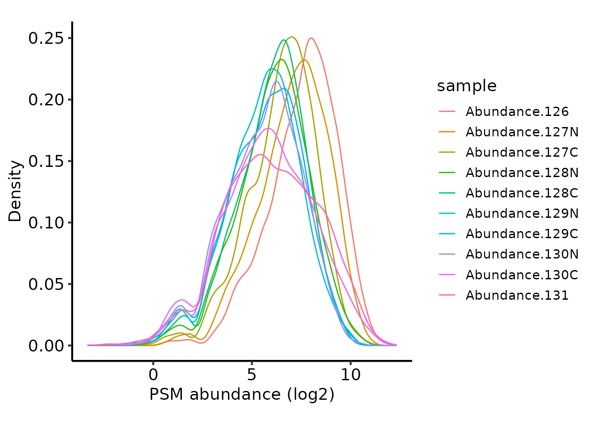
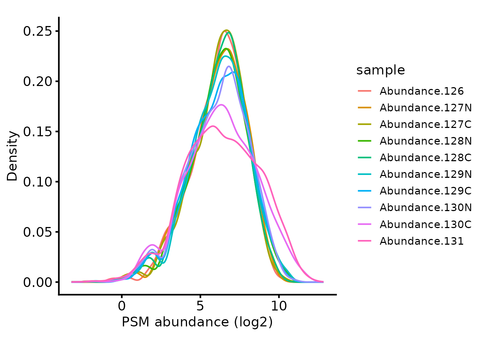

TMT QC PSM-level quantification and summarisation to protein-level abundance
Tom Smith
2025-03-28
TMT_PSM_QC_Summarisation.RmdQuantitative proteomics using isobaric tagging such as Tandem Mass Tags (TMT) has a considerable benefit over Label-Free Quantification (LFQ) in that up to 35 samples can be quantified for each Peptide Spectrum Match (PSM). This has multiple benefits over analysing samples in separate runs (LFQ):
- TMT reduces protein quantification variance since PSM-level quantification is derived from the same MS1 ion for all samples
- LFQ suffers from much higher missing values when comparing across samples due to the limited number of ions that can be fragmented in each run and the associated issue of peptides being identified in only a subset of runs (O’Connell et al. 2018). This is ameliorated to a significant degree by Data-Independent Aquisition (DIA) LFQ. However, DIA still involves quantifying each sample separately, so missing values are not entirely removed, and proteins in each sample may be quantified from different sets of peptides.
Because TMT quantifies from the same MS1 ion for all samples, this standardises the features quantified in each sample, which simplifies the comparison between samples and increases quantification accuracy of summarised features such as proteins.
However, TMT does suffer from ratio compression, which should be avoiding by performing quantification with SPS MS3 (McAlister et al. 2014).
Here, we will QC and filter the PSM level abundances from PD before summarising them to protein-level abundances.
Load required packages
To clarify which functionality is provided by which package, we will
use package::function. For your own code, there is no need
to specify the package unless you want to maintain this clarity.
Defining the contaminant proteins
We need to remove contaminant proteins. These were defined here using the cRAP database. Below, we parse the contaminants fasta to extract the IDs for the proteins in both ‘cRAP’ format and Uniprot IDs.
crap_fasta_inf <- system.file(
"extdata", "cRAP_20190401.fasta.gz",
package = "biomasslmb"
)
# Extract the protein IDs associated with each cRAP protein
crap_accessions <- biomasslmb::get_crap_fasta_accessions(crap_fasta_inf)
print(head(crap_accessions))
#> [1] "cRAP001" "P00330" "cRAP002" "P02768" "cRAP003" "P00883"Read in input data
We start by reading in quantitative proteomics data into a
QFeatures object, which is the standard Bioconductor object
for holding quantitative proteomics data. See here
for documentation about the QFeatures object.In this case,
we are not adding any experimental details to the QFeatures
object, so the ColData will be empty.
psm_tmt_total is a data set available from the
biomasslmb package containing the PSM-level output from
Proteome Discoverer (PD) for an experiment with 10 samples (each one
being a separate TMT tags). It is a truncated file containing the first
5,000 PSMs only. Here, we will not include any details about the
experimental design. Usually, these would be included by providing a
data.frame to the colData argument. See
?readQFeatures for full details on how to read the
quantification data in a QFeatures object.
tmt_qf <- QFeatures::readQFeatures(assayData = psm_tmt_total,
quantCols = 36:45,
name = "psms_raw")
#> Checking arguments.
#> Loading data as a 'SummarizedExperiment' object.
#> Formatting sample annotations (colData).
#> Formatting data as a 'QFeatures' object.We have 2 quantification values which are exactly zero. These should be replaced with NA, since mass spectrometry is not capable of asserting that the protein had zero abundance in the sample.
tmt_qf[['psms_raw']] <- QFeatures::zeroIsNA(tmt_qf[['psms_raw']])We first perform routine filtering to remove PSMs that:
- Could originate from contaminants. See
?filter_features_pd_ddafor further details, including the removal of ‘associated cRAP’. - Don’t have a unique master protein.
# Perform routine raw data filtering.
# - Remove PSMs from contaminant proteins
# - Remove PSMs where protein ID is empty or not unique
tmt_qf[['psms_filtered']] <- filter_features_pd_dda(tmt_qf[['psms_raw']],
crap_proteins=crap_accessions,
level='PSM',
TMT=TRUE,
filter_crap=TRUE,
filter_associated_crap=TRUE,
unique_master=TRUE, )
#> Filtering data...
#> 5000 features found from 2364 master proteins => Input
#> 242 contaminant proteins supplied
#> 55 proteins identified as 'contaminant associated'
#> 4937 features found from 2347 master proteins => contaminant features removed
#> 4931 features found from 2342 master proteins => associated contaminant features removed
#> 4929 features found from 2341 master proteins => features without a master protein removed
#> 4754 features found from 2243 master proteins => features with non-unique master proteins removed
#> 4753 features found from 2243 master proteins => features without quantification removedNormalise
Next, we plot the peptide intensities to check they are approximately
the same using biomasslmb::plot_quant.
# Plot the peptide-level quantification distributions per sample
biomasslmb::plot_quant(tmt_qf[['psms_filtered']],
log2transform=TRUE,
method='density') +
theme_biomasslmb() +
xlab('PSM abundance (log2)')
Since the same amount of sample was labelled in each case, it’s
reasonable to use ‘diff.median’ normalisation with
QFeatures::normalize. First though, we need to
log-transform the abundances so the normalisation works as expected. We
exponentiate the quantification values back to the original scale
(reverse the log-transformation) afterwards, since the downstream steps
including summarisation to protein require non-transformed values
# Normalise the log2-transformed abundances using diff.median
tmt_qf[['psms_filtered_norm']] <- QFeatures::normalize(
logTransform(tmt_qf[['psms_filtered']], base=2), method='diff.median')
# Exponentiate the quantification values back to the initial scale.
assay(tmt_qf[['psms_filtered_norm']]) <- 2^assay(tmt_qf[['psms_filtered_norm']])
# Plot the peptide-level quantification distributions per sample
biomasslmb::plot_quant(tmt_qf[['psms_filtered_norm']],
log2transform=TRUE,
method='density') +
theme_biomasslmb() +
xlab('PSM abundance (log2)')
Removing low quality PSMs
We want to remove low Signal:Noise (S:N) PSMs, since the
quantification values will be less accurate and there will be more
missing values. We can inspect the relationship between S:N and missing
values using the plot_missing_SN function.
Note that where the signal:noise > 10, there are far fewer missing values.
# Add a more accurate average S:N ratio value.
# The one calculated by PD doesn't treat NA values appropriately!
tmt_qf[['psms_filtered_norm']] <- update_average_sn(tmt_qf[['psms_filtered_norm']])
plot_missing_SN(tmt_qf[['psms_filtered_norm']], bins = 20)Missing values per PSM, in relation to the signal:noise ratio
We can also look into this relationship at the tag level using
plot_missing_SN_per_sample to inspect whether there was a
labeling issue with any particular tag. In this case, there is no tag
which appears to have a high proportion of missing values when
signal:noise > 10.
plot_missing_SN_per_sample(tmt_qf[['psms_filtered_norm']], bins = 20)Missing values per tag, in relation to the signal:noise ratio
Based on the above, we will filter the PSMs to only retain those with
S:N > 10 using filter_TMT_PSMs since these PSMs are
clearly much closer to the limit of detection for the MS and therefore
likely to contain less accurate quantification data. Note that this only
necessitates removing ~ 1/20 of the PSMs in this case. Using the same
function, we will also remove PSMs with interference/co-isolation
>50% since these are also likely to contain less accurate
quantification data.
# Then filter PSMs to remove low S:N and/or high interference
tmt_qf[['psms_filtered_sn']] <- filter_TMT_PSMs(tmt_qf[['psms_filtered_norm']],
inter_thresh=50, sn_thresh=10)
#> Filtering PSMs...
#> 4753 features found from 2243 master proteins => Initial PSMs
#> 4753 features found from 2243 master proteins => Removing PSMs without quantification values
#> 4633 features found from 2207 master proteins => Removing PSMs with high Co-isolation/interference
#> 4455 features found from 2173 master proteins => Removing PSMs with low average S:N ratioSummarising to protein-level abundances
Now that we have inspected the PSM-level quantification and filtered the PSMs, we can summarise the PSMs to protein-level abundances.
For PSM to protein summarisation with TMT quantification, simply
summing together the PSM-level abundances provides accurate estimates,
so long as there are no missing values. If many missing values are
present, the MsCoreUtils::robustSummary method may be
preferred, since it is able to summarise accurately, even in the
presence of missing values (Sticker et al.
2020). For a comparison of the two summarisation approaches, see
the TMT - comparing protein summarisation approaches
vignette.
Here, we will use the simple sum summarisation. First, we need to
consider the missing values. If we leave the missing values in, we
either need to allow some protein quantifications to be NA,
or else ignore the missing values in the summarisation. The latter would
potentially mean different PSMs are summed for the a given protein
across the samples, making a given protein’s summarised abundances
across the samples less accurately estimated. Here, we will therefore
remove all PSMs with missing values.
tmt_qf[['psms_filtered_missing']] <- QFeatures::filterNA(
tmt_qf[['psms_filtered_sn']], 0)Next, we will remove PSMs for proteins with fewer than 2 PSMs. This is a common filter in proteomics to ensure the protein-level quantifications are derived from at least two independent observations. In some cases, for example phosphoproteomics, or where this filter appears to be too stringent, it may be appropriate to skip it.
min_psms <- 2
tmt_qf[['psms_filtered_forSum']] <- biomasslmb::filter_features_per_protein(
tmt_qf[['psms_filtered_missing']], min_features = min_psms)Finally, we perform the summarisation.
# Aggregate to protein-level abundances (using QFeatures function)
tmt_qf <- QFeatures::aggregateFeatures(tmt_qf,
i = "psms_filtered_forSum",
fcol = "Master.Protein.Accessions",
name = "protein",
fun = base::colSums)
#> Your row data contain missing values. Please read the relevant
#> section(s) in the aggregateFeatures manual page regarding the effects
#> of missing values on data aggregation.
tmt_qf[['protein']] <- QFeatures::logTransform(
tmt_qf[['protein']], base=2)Inspecting the number of PSMs and proteins through the processing steps
Now that we have performed all the filtering steps and summarisation
to protein-level abundances, it’s helpful to visualise how many
PSMs/proteins were retained at each level of the processing. We can use
the biomasslmb::get_samples_present and
biomasslmb::plot_samples_present functions for this. First
though, we need to decide which ‘experiments’ we want to plot and define
a named character vector since the QFeatures names are not sufficiently
clear by themselves
Below, we inspect the experiment names.
names(tmt_qf)
#> [1] "psms_raw" "psms_filtered" "psms_filtered_norm"
#> [4] "psms_filtered_sn" "psms_filtered_missing" "psms_filtered_forSum"
#> [7] "protein"In this case, we don’t want to plot the
psms_filterered_norm, since that’s just the normalised
quantification present in psms_filtered and no PSMs were
removed in that step.
Samples per PSM
We’ll start by inspecting the number of PSMs in each experiment. We
therefore define a named character vector all the PSM-level experiments,
excluding psms_filtered_norm. We set the row variables to
be Sequence, Modifications and
RT.in.min so that we count the number of unique PSMs.
rename_cols <- c('All PSMs' = 'psms_raw' ,
'Quantified, contaminants removed' = 'psms_filtered',
'Signal:Noise > 10' = 'psms_filtered_sn',
'No missing values' = 'psms_filtered_missing',
'>1 PSM per protein' = 'psms_filtered_forSum')
rowvars <- c('Sequence', 'Modifications', 'RT.in.min')
samples_present <- get_samples_present(tmt_qf[,,unname(rename_cols)], rowvars, rename_cols)
#> Warning: 'experiments' dropped; see 'drops()'
#> harmonizing input:
#> removing 20 sampleMap rows not in names(experiments)
plot_samples_present(samples_present, rowvars, breaks=seq(2,10,2)) + ylab('PSM')
#> Scale for fill is already present.
#> Adding another scale for fill, which will replace the existing scale.Samples quantified for each PSM at each level of processing
Samples per Protein
Next, we’ll use the same functions to inspect the number of proteins
at each level of processing. We need to supply an updated named
character vector to include the protein experiment and set
the row variables to be just the Master.Protein.Accesions
column.
rename_cols_prot <- c(rename_cols, 'Protein'='protein')
rowvars_prot <- c('Master.Protein.Accessions')
samples_present <- get_samples_present(tmt_qf, rowvars_prot, rename_cols_prot)
plot_samples_present(samples_present, rowvars_prot, breaks=seq(2,10,2))
#> Scale for fill is already present.
#> Adding another scale for fill, which will replace the existing scale.Samples quantified for each protein at each level of processing
In this case, because we have removed all missing values, the last two experiments have identical counts for the number of samples for each protein. From these two plots, we can see that the filtering to ensure that all proteins have >1 PSM removed only a few PSMs, but many proteins. Whether this is appropriate will depend on your data in hand.
Summary
Here, we have QCed the PSMs and filtered them in the following steps:
- Remove PSMs that are likely from contaminants
- Remove PSMs without a unique ‘master protein’
- Remove PSMs without any quantification values
- Normalise the abundance values so they have the same median value in all samples
- Remove PSMs with very low signal:noise
- Remove PSMs with high interference
We then summarised the PSM level abundances with two approaches,
sum and robustSummary, before comparing the
protein-level abundances obtained with each of them.
robustSummary handles missing values and therefore enables
more proteins to be quantified. sum is sensitive to
outliers with very high abundance, while robust is more
sensitive to outliers with very low abundance.
sessionInfo()
#> R version 4.4.3 (2025-02-28)
#> Platform: x86_64-pc-linux-gnu
#> Running under: Ubuntu 24.04.2 LTS
#>
#> Matrix products: default
#> BLAS: /usr/lib/x86_64-linux-gnu/openblas-pthread/libblas.so.3
#> LAPACK: /usr/lib/x86_64-linux-gnu/openblas-pthread/libopenblasp-r0.3.26.so; LAPACK version 3.12.0
#>
#> locale:
#> [1] LC_CTYPE=C.UTF-8 LC_NUMERIC=C LC_TIME=C.UTF-8
#> [4] LC_COLLATE=C.UTF-8 LC_MONETARY=C.UTF-8 LC_MESSAGES=C.UTF-8
#> [7] LC_PAPER=C.UTF-8 LC_NAME=C LC_ADDRESS=C
#> [10] LC_TELEPHONE=C LC_MEASUREMENT=C.UTF-8 LC_IDENTIFICATION=C
#>
#> time zone: UTC
#> tzcode source: system (glibc)
#>
#> attached base packages:
#> [1] stats4 stats graphics grDevices utils datasets methods
#> [8] base
#>
#> other attached packages:
#> [1] dplyr_1.1.4 tidyr_1.3.1
#> [3] ggplot2_3.5.1 biomasslmb_0.0.1
#> [5] QFeatures_1.16.0 MultiAssayExperiment_1.32.0
#> [7] SummarizedExperiment_1.36.0 Biobase_2.66.0
#> [9] GenomicRanges_1.58.0 GenomeInfoDb_1.42.3
#> [11] IRanges_2.40.1 S4Vectors_0.44.0
#> [13] BiocGenerics_0.52.0 MatrixGenerics_1.18.1
#> [15] matrixStats_1.5.0
#>
#> loaded via a namespace (and not attached):
#> [1] DBI_1.2.3 rlang_1.1.5 magrittr_2.0.3
#> [4] clue_0.3-66 compiler_4.4.3 RSQLite_2.3.9
#> [7] png_0.1-8 systemfonts_1.2.1 vctrs_0.6.5
#> [10] reshape2_1.4.4 stringr_1.5.1 ProtGenerics_1.38.0
#> [13] pkgconfig_2.0.3 crayon_1.5.3 fastmap_1.2.0
#> [16] XVector_0.46.0 labeling_0.4.3 rmarkdown_2.29
#> [19] UCSC.utils_1.2.0 visdat_0.6.0 ragg_1.3.3
#> [22] purrr_1.0.4 bit_4.6.0 xfun_0.51
#> [25] zlibbioc_1.52.0 cachem_1.1.0 jsonlite_2.0.0
#> [28] blob_1.2.4 DelayedArray_0.32.0 cluster_2.1.8
#> [31] R6_2.6.1 bslib_0.9.0 stringi_1.8.7
#> [34] genefilter_1.88.0 jquerylib_0.1.4 Rcpp_1.0.14
#> [37] knitr_1.50 usethis_3.1.0 BiocBaseUtils_1.8.0
#> [40] Matrix_1.7-2 splines_4.4.3 igraph_2.1.4
#> [43] tidyselect_1.2.1 abind_1.4-8 yaml_2.3.10
#> [46] lattice_0.22-6 tibble_3.2.1 plyr_1.8.9
#> [49] withr_3.0.2 KEGGREST_1.46.0 evaluate_1.0.3
#> [52] desc_1.4.3 survival_3.8-3 Biostrings_2.74.1
#> [55] pillar_1.10.1 corrplot_0.95 generics_0.1.3
#> [58] rprojroot_2.0.4 munsell_0.5.1 scales_1.3.0
#> [61] xtable_1.8-4 glue_1.8.0 lazyeval_0.2.2
#> [64] tools_4.4.3 robustbase_0.99-4-1 annotate_1.84.0
#> [67] fs_1.6.5 XML_3.99-0.18 grid_4.4.3
#> [70] cutr_0.0.0.9000 MsCoreUtils_1.18.0 AnnotationDbi_1.68.0
#> [73] colorspace_2.1-1 GenomeInfoDbData_1.2.13 naniar_1.1.0
#> [76] cli_3.6.4 textshaping_1.0.0 S4Arrays_1.6.0
#> [79] AnnotationFilter_1.30.0 gtable_0.3.6 DEoptimR_1.1-3-1
#> [82] sass_0.4.9 digest_0.6.37 SparseArray_1.6.2
#> [85] htmlwidgets_1.6.4 farver_2.1.2 memoise_2.0.1
#> [88] htmltools_0.5.8.1 pkgdown_2.1.1 lifecycle_1.0.4
#> [91] httr_1.4.7 bit64_4.6.0-1 MASS_7.3-64